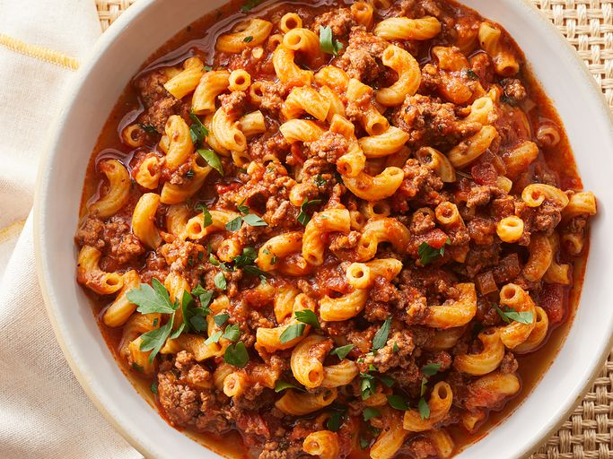

American goulash was one of my all-time favorite comfort food meals when I was growing up. They served it in my school cafeteria alongside a slice of buttered white bread and a carton of milk. This Americanized version of goulash was invented to stretch a small amount of beef into enough food for a not-so-small family. It's a simple dish that doesn't taste simple, so it's perfect for your weeknight dinner rotation.